Candidate List 20250926Previous Day Next Day
Section 1: New Sources (age<1d) Section 2: Old (1-5d) sources observed last nightplaceholder
Section 1: New Afterglow/FBOT Cands Last Night (2)
1. ZTF25abtysfi (Afterglow?FBOT?) [Back to Top] [Share] [Trigger Swift] [Fritz] [Lasair]RA, Dec: 334.23156, -13.31627 22h16m55.57s, -13d-18m-58.58sGalactic (l, b): 46.05812, -51.40774 WARNING: -2.47 deg from ecliptic plane ext(g-r) = 0.049 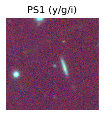
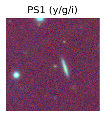
TESS: Sectors [ 42 92 116]
PS1: 0 sources in 3 arcsec
LegacySurvey: 1 sources in 3 arcsec Closest: d = 1.95 arcsec, 216.7 deg (east of north) photoz=0.28 (68% bounds 0.22, 0.34), type=REX peak abs mag = -21.62 (68% bounds -21.02, -22.11)

Extinction-corrected gr color:
From alerts: -0.1 +/- 0.13 mag
Extinction-corrected gi color:
From alerts: -0.53 +/- 0.27 mag
Extinction-corrected ri color:
From alerts: -0.43 +/- 0.29 mag
Consistent with synchrotron, g-r>0!
Rise Rate:
g: 0.47 mag/day
r: 0.8 mag/day
i: -99 mag/day
Fade Rate:
g: -99 mag/day
r: -99 mag/day
i: -99 mag/day
2. ZTF25abuavfd (Afterglow?) [Back to Top] [Share] [Trigger Swift] [Fritz] [Lasair]RA, Dec: 308.9178, -18.00955 20h35m40.27s, -18d 0m-34.38sGalactic (l, b): 27.27206, -30.84939 WARNING: 0.61 deg from ecliptic plane ext(g-r) = 0.047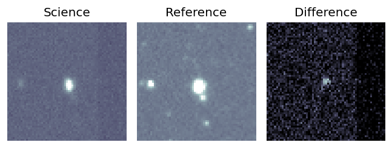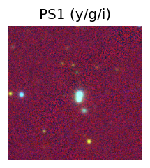
TESS: Sectors 116
PS1: 1 source in 3 arcsec Closest: d = 2.16 arcsec photoz=0.72+/-0.22 peak abs mag = -24.44
LegacySurvey: 0 sources in 3 arcsec
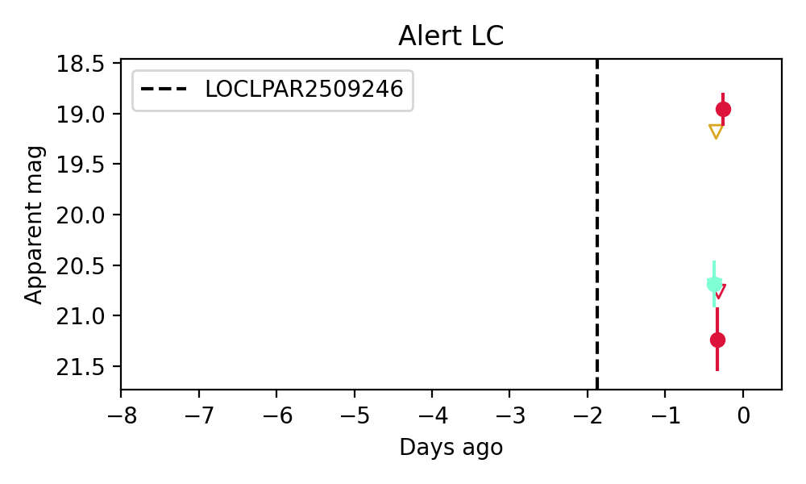
Extinction-corrected gr color:
From alerts: 1.21 +/- 0.27 mag
Extinction-corrected gi color:
From alerts: 1.44 +/- 99 mag
Extinction-corrected ri color:
From alerts: 0.23 +/- 99 mag
Consistent with synchrotron, g-r>0!
Rise Rate:
g: -99 mag/day
r: 29.31 mag/day
i: -99 mag/day
Fade Rate:
g: -99 mag/day
r: -99 mag/day
i: -99 mag/day
Section 2: Older Sources Observed Last Night (3)
0. ZTF25abtyask (Afterglow?) [Back to Top] [Share] [Trigger Swift] [Fritz] [Lasair]RA, Dec: 240.09051, -13.12472 16h 0m21.72s, -13d-7m-29.00sGalactic (l, b): 357.76865, 29.01335 ext(g-r) = 0.222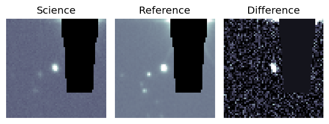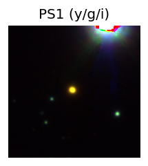
TESS: Sectors [ 91 115 116 117]
PS1: 0 sources in 3 arcsec
LegacySurvey: 0 sources in 3 arcsec
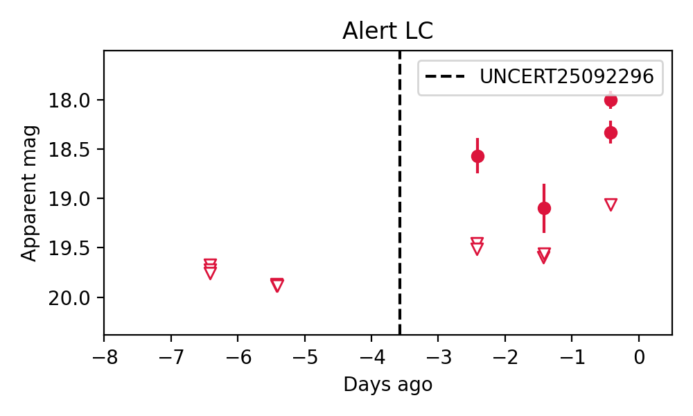
Rise Rate:
g: -99 mag/day
r: 1.59 mag/day
i: -99 mag/day
Fade Rate:
g: -99 mag/day
r: 1.04 mag/day
i: -99 mag/day
1. ZTF25abubshe (FBOT?) [Back to Top] [Share] [Trigger Swift] [Fritz] [Lasair]RA, Dec: 352.452, 20.6405 23h29m48.48s, 20d38m25.81sGalactic (l, b): 98.36016, -38.30527 ext(g-r) = 0.099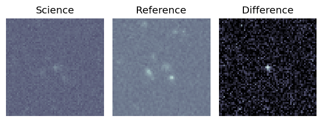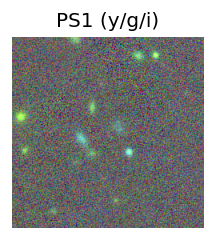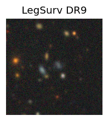
TESS: Sectors [56 83]
SDSS (10 arcsec):Found SDSS phot-z: z=0.45; peak abs mag = -21.92
PS1: 0 sources in 3 arcsec
LegacySurvey: 1 sources in 3 arcsec Closest: d = 0.61 arcsec, 171.7 deg (east of north) photoz=0.61 (68% bounds 0.39, 1.34), type=REX peak abs mag = -22.4 (68% bounds -21.24, -24.52)
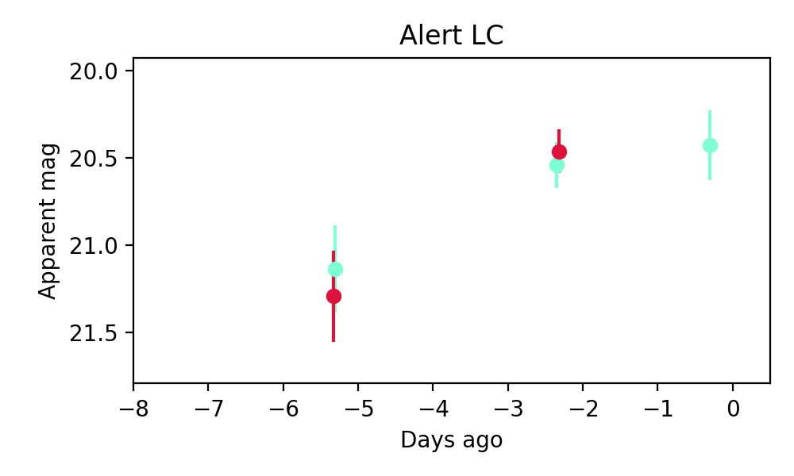
Extinction-corrected gr color:
From alerts: -0.02 +/- 0.18 mag
Consistent with synchrotron, g-r>0!
Rise Rate:
g: 0.14 mag/day
r: 0.28 mag/day
i: -99 mag/day
Fade Rate:
g: -99 mag/day
r: -99 mag/day
i: -99 mag/day
2. ZTF25abuczlw (Afterglow?FBOT?) [Back to Top] [Share] [Trigger Swift] [Fritz] [Lasair]RA, Dec: 29.56841, 43.60556 1h58m16.42s, 43d36m20.02sGalactic (l, b): 135.54926, -17.62269 ext(g-r) = 0.093


TESS: Sectors [18 58 85]
PS1: 1 source in 3 arcsec Closest: d = 1.94 arcsec photoz=0.23+/-0.35 peak abs mag = -20.51
LegacySurvey: 0 sources in 3 arcsec

Extinction-corrected gr color:
From alerts: -0.07 +/- 0.21 mag
Consistent with synchrotron, g-r>0!
Rise Rate:
g: 0.62 mag/day
r: 0.19 mag/day
i: -99 mag/day
Fade Rate:
g: 26.05 mag/day
r: -99 mag/day
i: -99 mag/day